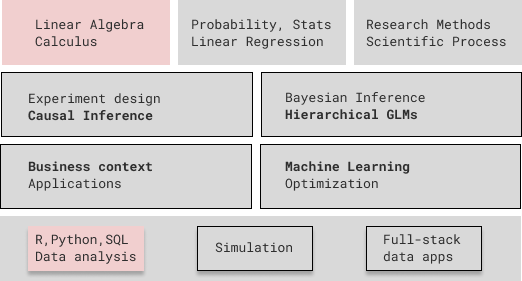

Are you ready for an adventure?
There are three questions I lose sleep over: “What is data science?”, “Is it still relevant?”, and “How should it be taught?” The standard definition “intersection of statistics, economics, and computer science”, answers none. Instead, I find it helpful to think of this applied, quantitative, and interdisciplinary field as decision science.
As the author of the course – all views and mistakes are entirely my own and do not represent any organization.
In the context of businesses, we want to improve financial and non-financial outcomes like revenue, profitability / EBITDA, market share, unit economics, production efficiency, customer acquisition, user experience, customer lifetime value, etc. A firm will increase its chances to improve performance if it has an accurate diagnosis of the current state and formulated a good strategy, but it still has to make many good decisions under uncertainty, test and validate new ideas.
A decision scientist should collaborate with domain experts, decision-makers, clients, and stakeholders to understand their domain, challenges, ask the right questions, and formulate a problem well. They will probably use tools from systems’ thinking,1 data analysis, statistical modeling, and simulation to come up with hypotheses, ideas, and an understanding of the problem space.
1 Systems’ thinking helps in developing a big picture understanding of messy problems, by acknowledging the interconnectedness of the parts, feedback loops, causes, and global optimization
2 I’ll use actions, decisions, interventions, and testing ideas interchangeably
This effort could already be valuable as a diagnosis of the causes of performance, inspiration for decision-making and strategy. However, we still need to test if our ideas bring an improvement and whether our hypotheses are plausible. For that, we design experiments, operationalize predictive models and optimization algorithms, implement interventions and policies.2
\[ \text{Question} \rightleftharpoons \text{Model} \implies [ \text{Insight} \rightarrow \text{Action} \rightarrow \text{Outcome}] \]
The models we’re building should not only be statistically rigorous and implemented well, but bring insight into the consequences of our actions. Moreover, a decision scientist should have the skills to communicate these insights in a plain language, persuasively, and be transparent about the assumptions they’re making and the uncertainty associated to their predictions and inferences.
Why focus on fundamentals?
Not gonna lie, the task and endeavor I outlined is not easy at all. In this website, I will explain how to study and master the fundamentals of statistical modeling, business economics, and “programming for data science”, which will help you become more effective at problem-solving. These skills will be valuable in the majority of career paths you might choose, but require effort and commitment.
Last, but not least, I aspire to teach people how to navigate this interdisciplinary landscape and gain an understanding of how statistics, machine learning, econometrics, operations research, AI, cognitive science, and scientific method fit together. 3 The mastery of fundamentals, together with an understanding of “the landscape” will enable you to develop a powerful toolbox for tackling most problems that you will encounter in businesses.
3 The terms of AI, data science, quant, analytics are overused. We will have to define them more precisely
Anyone lost, confused, stuck, or overwhelmed by data science and machine learning complexities, who wants to see the big picture, a path forward, and the possibilities afforded by decision science.
If you stumbled upon this website, you’re probably a student in Quantitative Economics, Business Analytics, or know me personally – well, because I shamelessly promoted it.
Maybe, you’re an engineer getting curious about ML or an analyst with a knack for the business, looking to improve your workflow and expand the quantitative toolbox. Maybe you’re a product manager or an entrepreneur who wants to infuse AI into your startup.
In my opinion, junior data scientists and ML practitioners a few years into their journey will benefit the most from the re-contextualization of fundamentals that I’m doing here, which could enable them to take another leap in career.
This website is not a self-contained course, book, or bootcamp – but a vision, philosophy, and concrete roadmap for learning and teaching decision science. It emerges out of:
- Lessons learned from my industry experience as a data scientist, engineering and product manager, then leader
- Teaching to creative and motivated students, who are confused by the overwhelming amount of content available online
- The need to bridge the gap between theory and practice, between mathematical world of elegant abstractions and messy real world of data and decisions in businesses 4
- The work of outstanding teachers and researchers who made their courses freely available. Without them, both my career and this guide would be impossible
4 There are many excellent textbooks, but we need better stories and case-studies
A lot has been written about the journey from novice to expert and the process of mastery in programming, chess, tennis, painting, music, etc. Decision science is challenging due to its breadth across disciplines and depth (starting from fundamentals). It will require two kinds of intentional practice and active learning over a long period of time:
- Contemplating in the library: understanding the inner workings and practical relevance of key theoretical ideas
- Engineering in the trenches: practicing battle-tested technologies and solving increasingly messier, more complicated, and realistic problems
I my teaching, I present stories and use-cases which motivate probability distributions, LLN/CLT, Bayes’ rule, sampling, measurement, etc.
In contemplation, we try to see how fundamental theoretical concepts and models translate into real-world stories and solutions to practical problems. It might become confusing at times, but I hope you bear with me until you see the benefits of those abstractions.
When exploring the problem space in various domains,5 I recommend that you take the point of view of a decision-maker inside a business and not of a detached scientist. This practice will force you to focus on actions, relevance of insights, and understanding clients’ needs, challenges, and objectives. In practice, it’s little consolation if we picked the right model and methodology for the task if it’s not actionable and useful – interesting is not good enough!
5 Like banking, e-commerce, tech platforms, finance, insurance, public health, etc
On the other hand, engineering in the trenches is a hard skill. The only way to become better at modeling and data analysis is hands-on practice – with your code editor, book, and pen/paper near you at all times. You will truly understand something only by building it.
In order for our models to be useful at scale, we have to implement these ideas in code and integrate into existing software systems. If we are to increase the chances of success, we’ll also have to follow best practices of reproducible research, automation, and model operationalization. We’ll also have to think as a product manager.
A fair question to ask is how this vision is different from data science. In my experience, data science teaching and jobs focus much more on exploration, data mining, and inspiration – to the point of becoming “analytics + machine learning”. There is nothing wrong with it when applied appropriately, but something important is missing.
In decision science, actions and outcomes are central, not the insight, inspiration, or prediction. This means that we need more statistical and methodological rigor, scientific and causal thinking / inference, economics and cognitive science of decision-making.6
Therefore, we don’t pay much attention to data mining, LLMs, computer vision, and deep learning. Nor we do complicated ensembles, stackings, and hyperparameter optimization of machine learning models. Having said that, we do respect robust predictions and software engineering aspects of data science – but choose to focus on what do we do with it next.
6 One has to be very careful when using a predictive model in situations when we want to intervene in a system, not just to use predictions in a downsteam optimization task.
At last, I want to tell you two important lessons from Patrick Winston’s talk at MIT, “How to speak”, which motivate the intentional practice and the value of mastering the fundamentals
- The quality of your idea and solution is a function of knowledge, practice, and talent: \(Q = f(\mathbb{K}, \mathbf{P}, T)\), where talent is the least important and we shouldn’t over-emphasize it
- Your success will be largely determined by your ability to speak, write, and the quality of your ideas – \(g(S, W, Q)\)
Why is this journey rewarding?
You might’ve heard that data scientist is the sexiest job of 21st century, that AI is going to take over repetitive jobs, deep reinforcement learning models are beating people at go, Dota, chess, solving almost-impossible protein-folding problems. The world is awash in the newest ChatGPT and Midjourney frenzy, with new developments every month and week. There are so many cool applications of AI and modeling and so little time.

You don’t, at least if you want to have a balanced life. That’s why I choose to focus on fundamentals which stood the test of time. You will be surprised how many problems that businesses encounter can be solved well with simple, even linear models.
These (statistical) fundamentals are anyways a prerequisite before diving into understanding the technicalities of those cutting-edge models and systems.
I want you to realize, that despite all the (justified) hype around deep learning and generative AI – well established fields of statistics, econometrics, causal inference, operations research, control theory, dynamical systems, cognitive science, and computer science have been evolving as well. These are not just prerequisites and intellectual forerunners for AI, but tools routinely and successfully used in a large problem space.
We live in a volatile, uncertain, complex, and ambiguous world,7 but we still have to make decisions. Those decisions will bring better outcomes if they are informed by understanding the causal processes, driven by evidence, and robust predictions. People study the fields outlined above in order to be well equipped for such challenges.
In businesses, data science and AI can have a function of decision-making support, process improvement, be an essential part of the system or product itself – like in the case of Uber, Amazon, Netflix, Spotify, Google and many others.
To get a better sense of what I mean by decision-making support, I will present a few challenges many data scientists are working on in different industries. Notice the common thread of optimization at a large scale and that many of these applications are related to important decisions in the value chain of a firm.
- Demand forecasting and inventory optimization: if we produce or procure too little, we’ll lose sales and customers, if we order too much, we’ll end up with excess inventory and that cash could’ve been spend for growth or R&D
- Can we quantify the uncertainty in demand? Do our methods scale to millions of SKUs like in the case of Zara?
- Production planning and quality control is perhaps the most tangible of applications, where we can see the improvements brought by our models on the ground
- Revenue management, pricing optimization, and personalized promotions. This is what ride sharing platforms like Uber and Bolt do, airlines, and when you buy a concert ticket8
- Estimating the impact of advertisement, marketing mix modeling, and conversion optimization. Love it or hate it, the reality is that most direct-to-consumer firms have to advertise in order to grow – and they better allocate that marketing budget smartly
- Customer churn, repurchase, engagement, lifetime value (LTV) is perhaps where most data scientists’ time is wasted. Knowing which customers are at a risk of unsubscription is interesting, but what we really want is how to improve their experience with the service and convince them to stay
- Fraud detection, credit default prediction, insurance risk are classical and important applications in banking and insurance, if you’re into that kind of stuff
- Choice modeling, recommender systems, targeting and uplift models help the firm better understand customer preferences and choices, thus, suggesting products which are most relevant for them out of an overwhelmingly big catalog
- Improving products, assortment, and merchandising also require the kind of experimentation and quantitative methods we’re going to investigate on this website
8 The first two areas are all about balancing the demand and supply, which requires careful economic thinking and quantitative methods
Don’t worry if you’re not familiar with some of the applications or if it’s not clear yet which models and fundamentals will be used. If none of these examples appeal to you, there are no less applications in other fields like finance, public policy, healthcare, political science, manufacturing, psychology, ecology, etc.
I’m having a hard time coming up with examples where the methods we’re going to study are NOT useful. Even anthropologists have extremely sophisticated statistical models in order to make the most out of small and poor quality data. Maybe accounting (?)
I want you to take away one thing, that is “AI” and “data science” in businesses boils down to Decision-Making under Uncertainty at Scale
This is the best advice I ever got as a novice data scientist and it will be really helpful for people who care a lot about the technical aspects of statistical and machine learning models.
Your superpower is the ability to solve problems at scale and answer difficult questions by building models and programming. However, you should always put yourself in the shoes of the client and deeply understand their domain, data, objectives, tradeoffs, and decisions. If you want your work to bring change, communicate persuasively, in their language.
This mindset will ensure that your solution is valuable and used. Otherwise you might risk that your high-quality contribution is not understood, not trusted, not actionable and thus, not adopted.
Don’t travel without a map
When you travel to an unknown place, you need a map to know your location and where are you going. Consider this guide a conceptual frame which ties together everything you have learned so far and can be built upon as you progress in your career and studies. You will probably go back to the same idea years later, with greater wisdom and skill – to unlock its real power. We should embrace the fact that learning is not linear.
At the risk of annoying you with my metaphors, let me explain what is wrong with our existing maps. Some are too simplistic and low resolution, resulting in too much wandering around. Others are not maps at all, but a sequence of subjects to study – which misses the interdisciplinary nature of decision science. At last, many are too detailed, overwhelming, and unclear about what is most important.

If you go to the data science section in Coursera, you will see a hundred pages of courses and specializations. The situation is even worse with the amount of available tutorials and Medium.com articles.
A student is guaranteed to get lost in details and be overwhelmed by all those 800 page hardcore textbooks required by some classes. On the other hand, seemingly pragmatic, cookbook and bootcamp-style approaches miss depth, nuance, key theoretical ideas, and methodological aspects.
Inevitably, you have to use the recommendations provided by other people. I really hope you will like the references I provide, which were carefully curated during the past 10 years. Almost all are free, open-source, and supplement the lectures / theory with code examples.
This is the course I wish I had when starting my journey in data science, which would prepare me for the realities of industry, often very different from the academic world. In the following sections and chapters, I will outline a powerful set of fundamentals, the common threads and connections between them, where to read or watch to gain understanding, and how to practice in order to develop your skills.
What is a model?
By now you’ve heard the word “model” a lot of times. In the most general sense, a mental, mathematical, or statistical model is a simplified representation of reality. The real world is overwhelming and combinatorially explosive in its possibilities – we can’t take into account everything when making a decision. 9
9 Imagine how many possible paths are there if for every minute we have a choice between 20 actions: read, eat, move, watch, etc
We build models, because we want to understand a system and capture, explain the essential and relevant aspects of the phenomena of interest (e.g. what drives demand), in order to make good decisions. This notion of understanding hints to the idea of causality: if we intervene, this is what is likely going to happen. The reverse side of the medal are biases: patterns we think are causal, but are not real.
A model will take you only as far as the quality of your problem formulation, its assumptions, and the data you have. Its results are useful only if they inspire new questions or hypotheses, generate actionable insight, or make reliable predictions. I know this sounds very abstract, but be patient, I’ll formalize what a statistical model means and give plenty of practical applications and examples.

One of the most important ideas in statistics is that the causes are not found in data, but in scientific theories. In other words, the answer to our quantitative question is an unobserved, latent quantity or process. Hence, the data is the phenomenon, at the surface (Pollock’s canvas) and we would like to know what mechanism could plausibly generate it.
On the other hand, models are useful because if successful, they separate the noise from the signal and synthesize all the relevant information we have in our sample. This generalization (abstracting away from idiosyncrasies of each observation) allows us to make predictions and gain insights. Think of the way Picasso drew a camel – lots of artists will agree that simplification is also beautiful.
We collect data, perform experiments, and build models in order to minimize the effect of our biases and foolishness. It’s also important to remember that all models have assumptions, pressupositions, and limitations. They are little machines, golemns of prague which follow instructions precisely, and can backfire if used outside their range of validity. They can be powerful, but lack wisdom, which is found in your domain / problem understanding and scientific thinking.
A. Gelman highlights three different aspects of statistical inference. We want to generalize from sample to the population of interest, from treatment to control group, and from measurement to the underlying theoretical construct.10
\[Sample \longrightarrow Population\]
\[Treatment \longrightarrow Control\]
\[Measurement \longrightarrow Construct\]
The holy grail is to build statistical models based on the causal processes informed by theories and hypotheses. If we take into account how we measured, and collected data, we’ll increase our chances to generalize our conclusions and will have stronger evidence.
10 You can also think of prediction and inference as the problem of missing data
In other words, our vague economic or scientific hypotheses translate into concrete process models (that we can analyze mathematicaly and in simulations), for which we build statistical models in order to draw empirical conclusions and quantify the uncertainty in our beliefs (or the expected outcomes of long-run action).
Prerequisites
I think this roadmap will bring the most value to masters’ students, professionals, and students in their last year of BSc. If you never had a linear algebra, calculus, statistics, probability, and programming classes (or are very rusty in them) – read appendix 1 for a guide on how to integrate these foundational subjects into your study plan.
Most people I know studied statistics and probability at some point, but the presentation was highly theoretical and without any programming or data analysis. I propose we go back to the most important ideas, discuss their practical relevance, and really understand them by coding up the simulations for our real-world stories. We will see that statistics is not just useful, but can be a lot of fun!

- For Linear Algebra and Calculus – only exposure is needed, but competence and mathematical maturity will help a lot. It is a personal choice how deep to dive, but the more you know, the more comfortable you will be with mathematical abstraction.
- For Probability Theory – competence is needed, even though we start from the very beginning with a review of combinatorics. I suggest you read along and practice with a more comprehensive resource, like Joseph Blitzstein’s “Probability 110”.
- For Mathematical Statistics the story is the same as for Probability. You will need at least to be familiar with sampling distributions, CLT, hypothesis testing, and regression. This course attempts to clear up misunderstandings so that you don’t fall into common pitfalls of statistical practice.
- Python or R programming for data science is mandatory in order to do anything even remotely sophisticated in practice. 11 Besides the basics of the language, we need to develop competence in data wrangling, visualization, SQL / databases, and reproducible data analysis. I recommend two free books:
- “R for Data Science” by Hadley Wickham
- “Python for Data Analysis” by Wes McKinney.
11 Most universities introduce it far too late, but things are changing. I would argue that one has to start coding and analyzing data from stats 101 and linear algebra. Of course, the more experience and proficiency you have in one or both, the better
12 And if you’re interested in investment and portfolio management, check out Ben Felix, who recommends many foundational papers in the field
If you have to deal with financial statements at your job or have an interest in corporate finance, I strongly suggest you check out A. Damodaran’s NYU MBA lectures.12 Depending on your role in the firm, knowledge of microeconomics, marketing, management, operations, and logistics might be essential.
Last, but not least, there is value in understanding the scientific process and quantitative research methods. In Chapter 2, I adapt it to the context of decision science in businesses and show how most processes and workflows like CRISP-DM (data mining), Tuckey’s EDA (exploratory data analysis) are a part of it.
What will you learn?
First, in “Course Philosophy”, you will get some important tips and perspectives on how to learn in the context of this challenging, interdisciplinary field. I can attribute most of my past failures in learning to either a lack of solid fundamentals or to little intentional practice. Generally, you will truly understand by building it.

The top and bottom rows are the fundamentals, out of which we don’t cover linear algebra, calculus, and the basics of programming. I will highlight the practical relevance of probability and statistics through stories and case-studies. The four rectangles in the middle correspond to different modeling approaches
Then, I will frame everything we do in the context of the scientific process and show how methodology is important in maximizing our chances of a successful project. I think that most AI/ML and research initiatives fail because of poor planning and ad-hockery, but we can do better by not falling into most common pitfalls.
We also need to disucuss how our quantitative toolbox fits with what businesses are trying to do. I will briefly present a few ways to think about performance, strategy, decisions, and the value chain. It’s a good place to dive into more details on the wide range of applications and use-cases in various domains and industries. This is where we will introduce our three problem-solving approaches and perspectives: predictive (machine learning), inferential (statistical modeling), and causal (causal inference).
Next, we will use stories, case-studies, and simulations to get a solid grasp of most important concepts and ideas from probability and statistics. Many errors in applied statistics stem from a fundamental misunderstanding of the nature of statistical inference – so it’s very important that we think carefully about our problem, assumptions and not blindly follow a procedure.
We will also see what was the original motivation and practical relevance for the theory and methods you encountered before (t-test, ANOVA, linear regression, CLT etc). You can find this material, which is work-in-progress, in the “Simulation of economic processes” section – with both conceptual lectures and hands-on labs.13
13 Alternatively, you can look into the “Probability and Statistics study guide” for resources of what to read, code, and practice on each topic.
In the “Bayesian Statistics study guide”, you will find a clear sequence for studying statistical modeling and the fundamentals of causal inference. The set of techniques you’re going to encounter on the way towards hierarchical gerneralized linear models (GLMs) will be useful in about any practical application you’re going to encounter in practice. Moreover, this will prepare you for both machine learning and more advanced techniques in causal inference.
At this point, a good way to apply what you have studied is to pick a research question you’re passionate about, pick a problem-solving and modeling approach, do simulations, collect data, implement a model, and share the results in a 5 page paper or report. This will also teach you how to apply a methodology and communicate your ideas clearly in writing.
Last, but not least, I’ll share practical advice on how to operationalize your models and build full-stack data apps. This is important if you want your solution to bring the most impact for your clients and stakeholders. For that, you need their trust and buy-in, thus, an interactive application is one of the best ways to showcase what the models can do.
Acknowledgements
I mentioned that my teaching and industry success stands on the shoulder of giants. This is a metaphor scientists use to emphasize that we incrementally build on the work of others.
When it comes to statistical modeling and machine learning, the following people had a large influence on the way I think and in turn, I will refer you to their excellent books and courses: Trevor Hastie, Bradley Efron, Yaser Abu-Mostafa, Shai Ben-David, Richard McElreath, Andrew Gelman, Jennifer Hill, Aki Vehtari, Stephen Boyd, Gilbert Strang, Steven Burton, Nathan Kutz, Cassie Kozyrkov.
I have to especially thank Dr. Gheorghe Ruxanda for repeatedly pointing out the beauty, elegance, and importance of the deep foundations underlying probability theory and statistical modeling. I hope to pass on these insights to the future generations of students in quantiatative economics.
Why not another textbook?
At last, I have to explain why I’m not writing a book yet and linking you instead to the best resouces I know of. I think we have more than enough excellent books to learn the theory and develop skills in the fields within decision science.
No one has time to study it all and there is no single book which does everything best.14 So, by cherry-picking lectures, chapters, examples, and applications; then arranging them into a coherent roadmap, we get different perspectives and will start developing preferences for one way of teaching and one approach over another.
14 A cheeky reference to the no free lunch theorem
15 Ok, enough hyphenated adjectives, you get the point
From the point of view of teaching, the only reason to write my own book is the following: we need engaging, high-quality, in-depth, hands-on, realistic case-studies. 15 Sometimes, the only criticism I can address to some of the books is that the code examples are applied to boring and overused problems and datasets. It is not a fair criticism, since their main goal is teaching how the models work and no one will publish a thousand page manuscript.
The best kind of applications are relatively simple, but interesting and pose real modeling challenges. They capture the essence of the problem. This is why I heavily rely on Richard McElreath’s “Statistical Rethinking, 2nd ed.” and “Bayesian Data Analysis, 3rd ed.” by Andrew Gelman et. al.
In my opinion, writing such case-studies takes more time than actually solving the problem inside a firm. I will do it, someday. In general, after you studied from the linked materials, tried to write the code without reference, and understood the examples in depth – it is your responsibility to come up with a project or case-study. It can be on openly available or private data, on messy, real data, or your own, clean simulations. It’s a good idea to choose a domain, problem, and question you’re passionate about.
At last, the cleanest code associated to applications is not always written by the authors. Often, the open-source community significantly improves it and we’ll take advantage of this fact. Sometimes, I don’t like any code and will do it myself, but this is really, polishing an existing idea rather than an original contribution.